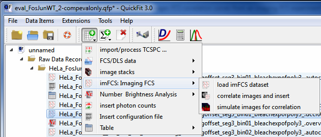
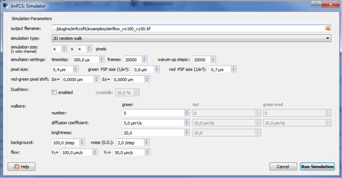

$$qf_commondoc_header.start$$ $$qf_commondoc_header.end$$
Introduction
The simulation function allows to create an image stack that can subsequently be correlated using the
imFCS correlator. The image stack is e.g. created from a configurable random walk and
stored as TIFF sequence to harddisk. All necessary meta-information (frametime, pixel-size, ...) is stored together with the TIFF file in a configuration
file format that the imFCS correlator understands.
Starting the sSmulator
You can start the simulator from Quickfit's main window, by clicking Data Items | Insert Raw Data | simulate images for correlation

The simulation dialog looks like this:

After entering all simulation properties (see below), you have to click on Run Simulation to start the process. This will generate the TIFF-file, specified as output filename, along with some text-files, describing the simulation and image properties. When the simulation is finished, the simulation dialog will be closed and the TIFF-file will be loaded into the imFCS correlator dialog.
Simulation Properties
2D Random Walk
- The simulation performs a 2D random walk with periodic boundary conditions for each walker
- There are up to three sets of walkers: green ones (always there), red ones and red+green ones (the last two only in the dual view mode).
Each set has its own diffusion coefficient and a global flow may be added in addition. Every walker is thus displaced in every timestep $$math:\Delta t$$:
$$bmath:\Delta x=N(0,\sqrt{2\cdot D\cdot \Delta t})+v_x\cdot \Delta t$$
$$bmath:\Delta y=N(0,\sqrt{2\cdot D\cdot \Delta t})+v_y\cdot \Delta t$$
where $$math:N(0,\sigma)$$ is a normally distributed random number with mean 0 and variance $$math:\sigma^2$$.
- Then the intensity in each pixel is calculated as
$$bmath:I_g(x,y)=N(B, \sigma_B)+\sum_{i=1}^{N_g} b_g\cdot\exp\left(-2\cdot\frac{(x-x_{g,i})^2+(y-y_{g,i})^2}{w_{xy}^2}\right)+\sum_{i=1}^{N_{rg}} b_g\cdot\exp\left(-2\cdot\frac{(x-x_{rg,i})^2+(y-y_{rg,i})^2}{w_{xy}^2}\right)$$
$$bmath:I_r(x,y)=N(B, \sigma_B)+\sum_{i=1}^{N_r} b_r\cdot\exp\left(-2\cdot\frac{(x-x_{r,i})^2+(y-y_{r,i})^2}{w_{xy}^2}\right)+\sum_{i=1}^{N_{rg}} b_r\cdot\exp\left(-2\cdot\frac{(x-x_{rg,i})^2+(y-y_{rg,i})^2}{w_{xy}^2}\right)$$
Here $$math:w_{xy}$$ is the parameter
psf_size, $$math:N_g, N_r, N_{rg}$$ are the numbers of green, red and red+green walkers and $$math:b_g, b_r$$ are the molecular brightnesses of the red and green dyes.
The pairs $$math:(x_{g,i}, y_{g,i}), (x_{r,i}, y_{r,i}), (x_{rg,i}, y_{rg,i})$$ are the trajectories (time index $$math:i$$) of the green, red and red+green walkers. The background signal
is calculated from a normal distribution with mean $$math:B$$ and standard deviation $$math:\sigma_B$$.
- In dual view mode, the output image has twice the given width and the right part of it represents the red detection channel. This is thus a simple
simulation of a DualView optical system, as often used for imFCS.